2.7 VS Code(Visual Studio Code)
학습목표: 프로 개발자들이 가장 많이 쓰는 스마트한 코드 편집기 ‘VS Code’를 알아보고, 데이터 분석가처럼 쓸 수 있도록 설치부터 마법의 확장팩(Extensions) 세팅, 그리고 초기화 설정법까지 완벽히 마스터합니다.
1. VS Code가 뭔가요? 🤔
비주얼 스튜디오 코드(Visual Studio Code, 이하 VS Code)는 마이크로소프트가 만들어서 천사처럼 전 세계에 무료로(오픈소스) 오픈한 ‘프로그래밍용 스마트 메모장’입니다. 2016년 정식판 발표 이후 폭발적으로 성장하여 현재 전 세계 개발자 1위의 점유율 최강 에디터 자리를 차지하고 있습니다.
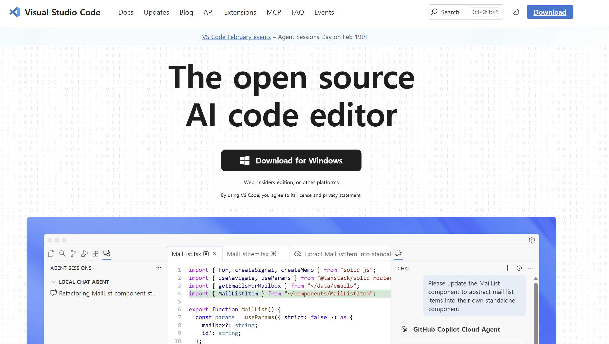
VS Code의 막강한 장점들
- 가볍고 빠른 실행: 무거운 타 통합개발환경(IDE)에 비해 프로그램이 매우 가볍고 동작이 빠릅니다.
- 인텔리센스(IntelliSense): 코드를 칠 때 색깔을 예쁘게 칠해주고, 내가 치려는 코드를 미리 똑똑하게 문맥을 파악하여 ‘자동완성’ 단어를 띄워줍니다!
- 무한한 확장성(Extensions): 스마트폰 앱스토어에서 앱을 깔듯, 레고 블록처럼 수많은 확장 프로그램을 붙여 내가 원하는 아주아주 강력한 만능 컴퓨터로 조립할 수 있습니다.
- 통합 터미널 및 Git 연동: 창을 왔다 갔다 할 필요 없이 내장된 터미널로 명령어를 치고, 소스코드 버전 관리(Git) 협업까지 한 번에 끝낼 수 있습니다.
- 데이터 분석 최적화: 노트북 파일(
.ipynb)을 그대로 열어서 셀 단위로 실행하는 기능을 완벽하게 내장 지원합니다.
2. VS Code 다운로드 및 설치하기
- 공식 홈페이지 방문: https://code.visualstudio.com/
- 파란색 커다란
Download for Windows(또는 Mac) 버튼을 눌러서 셋업 파일을 받습니다. - 설치 창이 뜨면 다
동의함,다음(Next)을 누르되, 아주 중요한 순간이 있습니다!- 중간에 체크박스들이 여러 개 나오는 단계에서 “바탕화면에 아이콘 만들기”, “PATH에 추가(Add to PATH)”, “Windows 탐색기 파일/디렉토리 컨텍스트 메뉴에 추가” 등이 나온다면 하나도 빠짐없이 전부 V 체크 되게 꼭 눌러주세요!
3. 한글 패치 장착하기 🇰🇷
처음 열면 온통 영어라서 당황스럽죠? 한국어로 언어를 바꿔봅시다.
- 프로그램 왼쪽 가장자리에 네모 블록들이 흩어져 있는 모양의 아이콘(
Extensions(확장), 단축키Ctrl+Shift+X)을 창 클릭합니다. - 위쪽에 뜨는 검색창에
Korean이라고 칩니다. - 지구본 모양이 그려진 Korean Language Pack for Visual Studio Code 라는 것을 찾아서 파란색
Install(설치)버튼을 누릅니다. - 설치가 끝나면 오른쪽 화면 아래 구석에 작게 [Change Language and Restart] 라는 파란 버튼이 뜨는데 이것을 누르면 VS Code가 재시작하면서 완벽한 한글 메뉴로 기적처럼 변신해 있습니다.
4. 파이썬 확장팩
VS Code 자체는 지금 껍데기일 뿐이라, 파이썬 코드를 알아듣게 하려면 두뇌를 심어줘야 합니다.
-
아까 그 확장(Extensions) 메뉴로 또 갑니다.
-
검색창에
Python이라고 치고 가장 맨 위(마이크로소프트 MS 공식 로고가 박힌 것)에 있는 걸설치(Install)합니다. 이제 에러가 났을 때 친절한 문법 검사와 팁을 해설사처럼 받을 수 있습니다!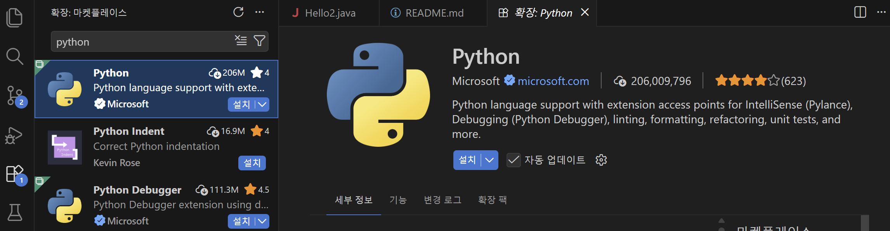
-
검색창 글씨를 지우고 이번엔
Jupyter라고 쳐서 설치합니다. 아나콘다에서 썼던 그 예쁜 블록 모양의 스케치북 시스템(.ipynb)을 VS Code 안에서도 똑같이, 더 예쁘고 강력하게 쓸 수 있게 만들어주는 엄청난 플러그인입니다.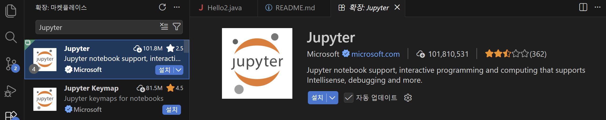
5. 첫 파이썬 파일 생성 및 터미널 실행해 보기
확장팩 설치가 끝났다면 실제 폴더를 열고 파이썬 코드를 작성해 보겠습니다.
-
VS Code 좌측 상단의 종이 두 장 겹친 모양(
Explorer탐색기) 아이콘을 눌러 ‘Open Folder(폴더 열기)’ 버튼을 누릅니다. 작업할 내 컴퓨터의 빈 폴더를 선택합니다. -
팝업이 뜨면 ‘Yes, I trust the authors(예, 작성자를 신뢰합니다)’ 파란색 버튼을 눌러 권한을 허용합니다.
-
탐색기 여백에 마우스 우클릭 후 ‘새 파일(New File)’을 누르고, 파일 이름을
hello.py로 짓습니다..py확장자는 이 파일이 파이썬 소스코드임을 뜻합니다. -
파일 창에
print("Hello, VS Code!")라고 코드를 적습니다.print("Hello, VsCode!")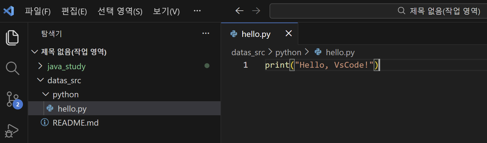
-
메뉴 상단에서 Run(실행) -> Run Without Debugging(디버깅 없이 실행)을 누르거나 키보드 단축키
Ctrl + F5를 누릅니다.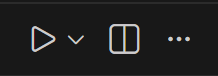
-
하단에
Terminal(터미널)창이 쑥 올라오면서 코드가 실행되고 결괏값이 출력되는 것을 볼 수 있습니다!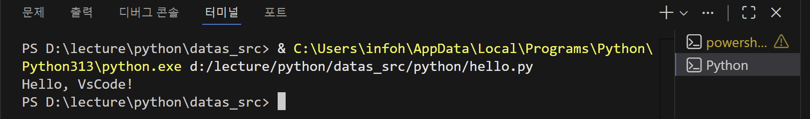
6. 주피터 노트북 파일(*.ipynb) 생성 및 실행해 보기
최신 데이터 분석의 꽃인 주피터 노트북도 똑같이 사용 가능합니다.
-
마찬가지로 탐색기에서 ‘새 파일’을 만들되 이번엔
hello.ipynb처럼 파이썬 노트북 확장자(.ipynb)로 만듭니다.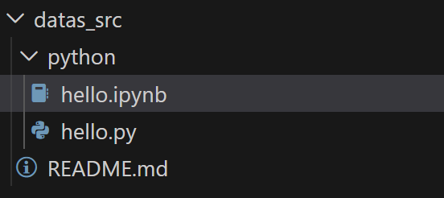
-
예쁜 블록(셀) 모양의 화면이 나타납니다. 빈 셀에 코드를 입력해 봅니다.
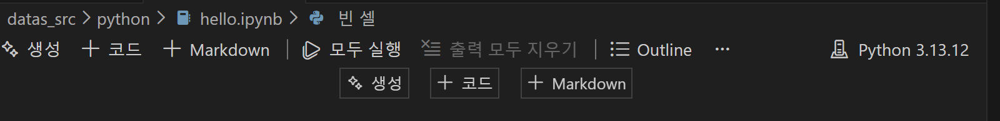
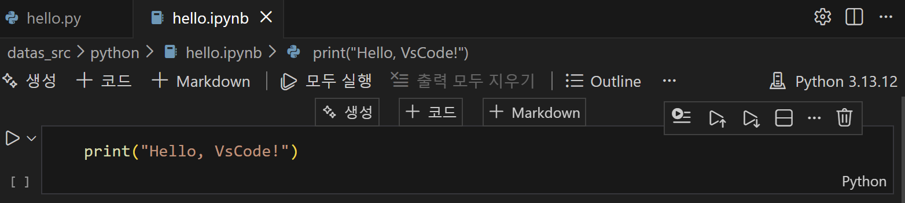
-
최초 실행 시, 화면 우측 상단이나 중앙 팝업에 파이썬 엔진을 선택해 달라는 ‘Select Kernel(커널 선택)’ 문구가 뜹니다.
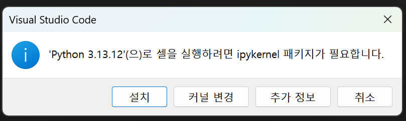
설치를 진행합니다.
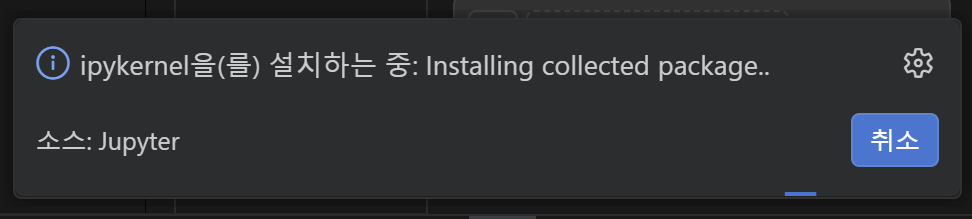
-
커널을 누른 뒤 ‘Python Environments(파이썬 환경)’ 메뉴에서 현재 컴퓨터에 설치된 가장 권장되는 Python 버전을 클릭하여 연결합니다. (만약 설치 과정에서 에러가 나거나 추가 설치 팝업이 뜨면 Install을 무조건 누르면 알아서 세팅됩니다.)
-
연결 후 셀 왼쪽에 있는 재생 버튼(▶)을 누르거나
Shift + Enter단축키를 치면, 코랩(Colab)에서 했던 것과 완벽히 똑같이 코드가 블록 바로 밑에 실행됩니다.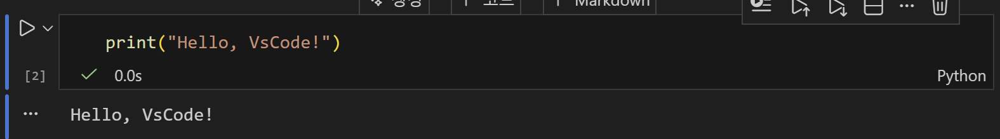
7. (부록) VS Code 환경 설정 초기화 팁 (Troubleshooting)
플러그인을 이것저것 깔다가 꼬였거나 VS Code가 오류를 뿜을 때, 아예 처음 설치했던 백지상태로 되돌리는 가장 확실한 방법입니다. VS Code는 사용자가 설치한 확장팩과 세팅 정보를 특정 폴더들에 파일로 꽁꽁 숨겨 저장해 둡니다. 프로그램을 삭제했다 깔아도 이 폴더가 남아있으면 설정이 그대로 유지됩니다.
따라서 초기화를 원한다면 VS Code를 종료한 뒤 아래 두 개의 숨겨진 폴더를 삭제(휴지통)해 버리면, 다음 실행 시 완벽하게 초심자의 초기 설정으로 시작할 수 있습니다.
C:\Users\[내 윈도우 로그인계정명]\.vscodeC:\Users\[내 윈도우 로그인계정명]\AppData\Roaming\Code